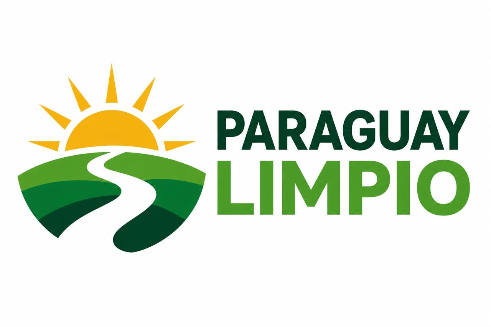

App municipal white-label sobre Munify (Asunción, Paraguay). El dueño definió el logo oficial
(referencia abajo). Pedido: reproducir SOLO el isotipo como SVG limpio (sol +
colinas + camino serpenteante), sin el texto "PARAGUAY LIMPIO", o generar uno muy parecido.
Referencias

Logo oficial (fuente de verdad)Isotipo extraído (crop mecánico, fondo blanco)
Entregable
SVG con fondo transparente, viewBox cuadrado, paths limpios (sin raster embebido).
Debe funcionar en fondo oscuro (sidebar #222226) y claro: el camino blanco del centro
necesita resolverse (contorno o relleno) para no desaparecer sobre blanco ni sobre negro.
Legible a 24px (sidebar) y rico a 512px (icono PWA).
Colores del original: sol #F5A81C aprox, verdes #4CAF50 / #2E7D32 / #1B5E20, camino blanco.
Acento de la app: #1b7a3d (primary del theme) — mantener armonía.
Dónde se usa
Sidebar y header mobile de la app (componente React ParaguayLimpioLogo.tsx — hoy tiene una hoja placeholder que se reemplaza por esto).